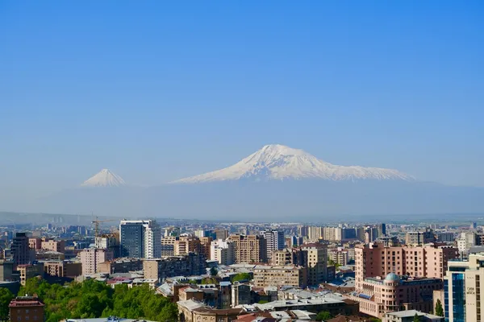

Armenia: Armenian brandy

Photo: Gor Davtyan on Unsplash
Armenia has made brandy since the 1880s and is famous for the Ararat brand from Yerevan.
How it's made
Double distilled and aged in Armenian oak.
Local white grapes are made into wine, which is double distilled in copper pot stills in a way similar to Cognac. The eaux-de-vie are then blended and aged.
History
Brandy making in Armenia began in 1887, when Nerses Tairyan built a winery and brandy distillery in Yerevan. The Shustov family bought it soon after, and their Ararat brandies won fame in Russia and Europe.
Ageing and label terms
Brandies are aged in barrels of Caucasian oak. Younger ones show their age in stars (three stars for three years, five stars for five), while older ones carry an age and a name, such as Akhtamar (10 years) or Nairi (20 years).
Styles
Young, fruity three and five-star brandies, and older, richer ones with notes of dried fruit, chocolate and spice.
Rules and protected names
Armenian brandy is made from grapes grown in Armenia. Under a trade agreement with the EU, Armenian producers are phasing out the word 'cognac' on their labels, though it is still widely used at home.
How to serve and classic cocktails
Neat at room temperature in a snifter, often with coffee or chocolate. Younger brandies also work well in a Sidecar or a Brandy Alexander.
With food
Dark chocolate, dried apricots, walnuts, and after a meal of grilled khorovats.
Good to know
A well-known story says Churchill was so fond of Armenian brandy after the Yalta conference that Stalin sent him cases of it every year.
Producers
- Yerevan Brandy Company (Ararat)
- Noy
Bottles to try
Ararat Five Stars
Dried apricot, honey, vanilla and walnut.
Strength: 40% · Age and cask: 5 years, Caucasian oak
The best-known Armenian brandy, made by the Yerevan Brandy Company, which dates back to 1887. The brandy is matured in casks of oak from the Caucasus.
Serve: Neat after dinner
Ararat Akhtamar 10 Years Old
Mellow and warm: dried apricot, vanilla, cocoa, flowers and toasted oak.
Strength: 40% · Age and cask: 10 years, oak casks
Made by the Yerevan Brandy Company, which has belonged to Pernod Ricard since 1999, from Armenian grapes. It is named after the island of Akhtamar on Lake Van.
Serve: Neat in a tulip glass after dinner
Ararat Nairi 20 Years Old
Deep and mellow with dried fig, chocolate, walnut and long, warm spice.
Age and cask: 20 years, oak casks
The flagship aged brandy of the Yerevan Brandy Company, blended from Armenian grape spirits of at least 20 years matured in Caucasian oak.
Serve: Neat in a snifter, with dark chocolate
Ararat Dvin Collection Reserve
Powerful dried fruit, chocolate, walnut and oak spice; rich and long.
Strength: 50%
First made in 1945, Dvin is bottled at 50%, stronger than most brandies. It is distilled from Armenian grapes at the Yerevan Brandy Company and aged in Caucasian oak.
Serve: Neat in a snifter with dark chocolate
More brandy regions
Explore all spirits in the interactive guide
The Wine Reference newsletter
New wines, stories and career guides, one email a week at most.
Over 18s only. Unsubscribe any time with one click. Your email is stored securely by Kit and never shared.
Support The Wine Reference
This guide is free, with no paywall. If it helped you choose a bottle, you can buy me a glass and keep it growing.
🍷 Buy me a glass